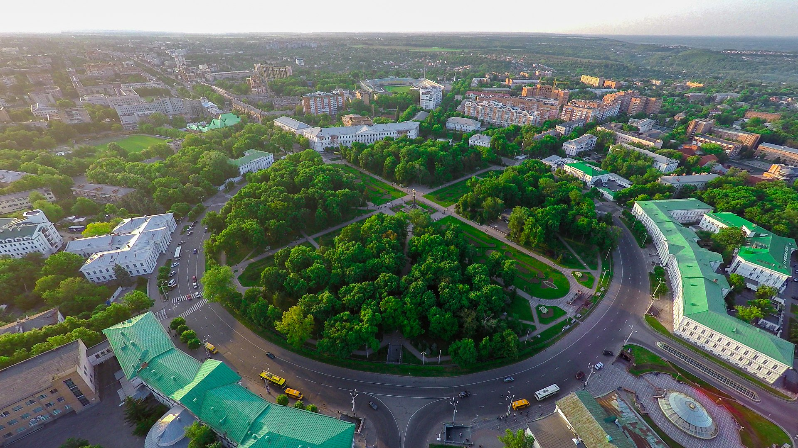

 Полта́ва — місто в Україні, адміністративний центр Полтавської області, Полтавського району і Полтавської міської громади. Історичне населене місце. Полтава — важливий культурний центр, великий транспортний вузол. Площа міста — 122 км². Адміністративно місто розділене на 3 райони: Шевченківський (колишній Жовтневий), Київський і Подільський (колишній Ленінський). Наявне населення у 2023 році — 294 695 осіб. У склад Полтавської міської агломерації входять такі населені пункти: Сем'янівка, Патлаївка, Затурине, Макухівка, Копили, Терешки, Шмиглі, Щербані, Розсошенці, Горбанівка, Мильці, Супрунівка, Шостаки, Гожули, Івонченці, Тахтаулове, Жуки. Полтава є центром Полтавської об'єднаної територіальної громади (ОТГ), до складу якої ввійшли також 10 сільських рад (села: Абазівка, Бричківка, Валок, Гожули, Ковалівка, Пальчиківка, Сем'янівка, Супрунівка, Тахтаулове, Чорноглазівка). Площа Полтавської міської ОТГ становить 547,8 км², населення — 312,8 тисяч осіб (2020). Полтава також є центром Полтавського району. До проведення реформи децентралізації населення району становило 68,4 тисяч осіб (01.10.2020), площа району — 1259 км². Площа сучасного Полтавського району — 10 844,2 км, населення — 595,9 тисяч осіб. Також виділяють Полтавську регіональну агломерацію, до складу якої включають території колишніх Полтавського, Диканського, Машівського й Новосанжарського районів області з чисельністю населення 462,4 тисяч осіб та площею 4277 км².

Офіційним часом заснування Полтави згідно з археологічними дослідженнями вважається 899 рік. Засноване у IX столітті сіверянами як форпост поперед Посульської лінії укріплене першопоселення на Івановій горі поклало початок розвитку давньоруського града Чернігівського, а згодом Переяславського князівств Х—ХІІІ століть, поселенням XIV, XV століть. Наявні археологічні свідчення погрому поселення дружиною Бориса Володимировича на початку XI століття.
Очолена козацтвом Визвольна війна проти магнатів Речі Посполитої перетворила Полтаву понад 350 років тому на військово-адміністративний центр Полтавського полку в складі Гетьманської України. У загальному соціально-політичному піднесенні Лівобережжя Дніпра того часу місто вирізнялося побудовою Хрестовоздвиженського монастиря, появою визначних творів козацького літописання Самійла Величка і Григорія Грабянки, поезій Івана Величковського. Полковник Мартин Пушкар, окрім звитяги під час Хмельниччини, відзначився невдалим повстанням проти Івана Виговського. Поблизу міста 1709 року відбулася баталія, що остаточно закріпила стратегічну перевагу Росії у Північній війні, та було підірвано союзницькі плани Івана Мазепи та Карла XII. Увійшовши до складу Російської імперії, Полтавська губернія стала духовною столицею Малої Русі, її етнічно-національним центром.
У ході Української революції територія Полтави стала частиною проголошеної ІІІ Універсалом Української Народної Республіки у якості земського центру адміністративно-територіальної одиниці Полтавщина. Протягом Першої радянсько-української війни, за два дні до початку червоними бойових дій в напрямку Полтави за наказом Порша частини двох українських полків в кількості 1800 багнетів були викликані з Полтави до Києва, адже українська армія не чекала наступу ворога на місто. Коли 19 січня 1918 року війська Муравйова вивантажилися на полтавському вокзалі та несподівано увірвалися в місто, то не зустріли серйозного опору. Шлях на Київ був відкритий з боку південного сходу, з боку Полтавської залізниці, звідки наступала так звана Перша армія червоних військ. Під час контрнаступу українських та союзних військ, керівництво українських більшовиків перемістилося до Полтави. 10 березня 1918 року воно виїхало з Полтави в Катеринослав, зважаючи на небезпеку здачі міста та внутрішнього конфлікту. У березні місто повернулося під контроль УНР. З 29 квітня до середини листопада 1918 року в місті працювали губернські органи державної влади Полтавської губернії Української Держави і знаходилося управління 6-го Полтавського корпусу Української Держави. Протягом Другої радянсько-української війни, перед наступаючими військами РСЧА, місто, без бою, було полишене Болбочаном. Нетривалий час у місті перебували війська Білої армії, під керівництвом генерала Май-Маєвського, але згодом у Полтаві остаточно встановилася радянська влада.
У Полтаві розташовані наступні заклади вищої освіти: